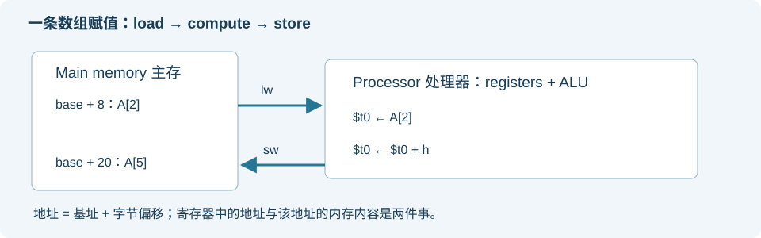
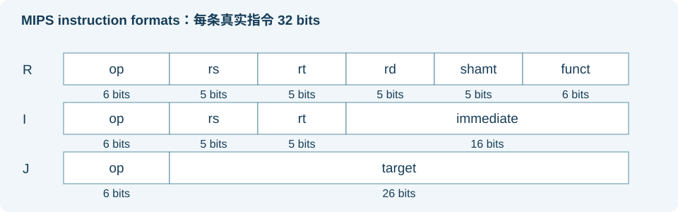
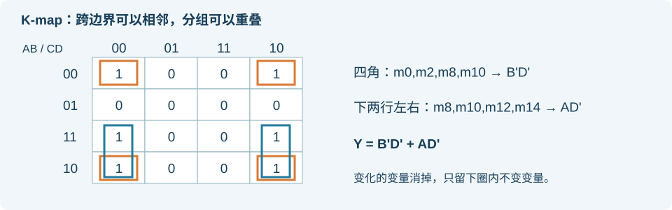
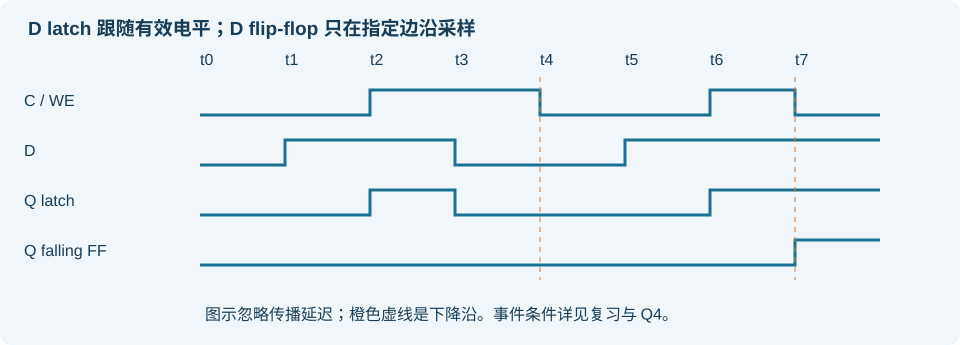

COMP2611 期中备考学习包
这是一份按你提供的 Fall 2026 材料整理的中文教学手册，保留重要英文术语与英文练习题干。先学会方法，再用新题检验，不直接复用旧期中题。
从哪里开始
今天先读《Homework2 逐题教学》 。完成作业后做结尾的 3 道迁移练习，避免只记住原题答案。《MIPS 按课件精讲》 ：打开正式 MIPS PDF 并排阅读；每节都有 PDF 页码与“课件旁注”，可直接抄在对应页旁。按“寄存器 → 内存 → 控制流 → 编码”连贯学习。《前序课程复习与考点》 ：按模块复习 Introduction、逻辑电路、数制与浮点，查看哪些旧题内容超出当前范围。《原创分模块练习》 ：12 题、100 分、建议 90 分钟；英文题干覆盖当前范围。答题时先不打开答案。《练习答案与评分》 ：按过程给分、找错因，再回到相应页重学。
本页是完整合订版；有章节跳转、练习答案折叠、可保存到当前浏览器的笔记区。本地学习包另有 6 个 Markdown 文本文件。页面笔记保存在本机浏览器，还可下载为文本作备份；不会自动写进原始课件。
已核对的范围
期中说明截图位于 midterm/midterm说明.docx：10 月 22 日 19:30–21:00，LTB/LTC，闭卷闭笔记，无电子设备，提供 MIPS green sheet，占 30%。相关 tutorials/labs 也在范围内。
正式 MIPS PDF 共 103 页，第 64 页为 Procedure 章节封面，所以主体讲解为 PDF p1–63。MIPS 手写材料的函数、递归与后续详细寻址规则超出主线时已标注为补充。
Homework 2：10 月 15 日 23:59 HKT 截止，共 50 分。学习包提供过程教学和核验，不替你提交 Canvas。
材料阅读索引
文件
本包使用方式
Introduction，30 页
数制、单位、抽象、ISA、组成与技术趋势复习
DigitalLogic，59 页
门、真值表、SOP/POS、PLA、K-map、latch/FF
DataRepresentation，38 页
补码、扩展、IEEE、自定义格式、ASCII
MIPS，103 页
前 63 页详讲；64 为章节封面；后续不纳入核心习题
Handwritten_DataRep，14 页
视觉核对补码解释、浮点分布、范围与精度
Handwritten_DigitalCircuit，18 页
视觉核对门、MUX、PLA、K-map、锁存器和主从 FF
Handwritten_MIPS，20 页
前 12 页对应核心；13–17 页函数递归；18–20 页执行与寻址补充
Tutorial 00–05
数制、组合、时序、整数、浮点、MIPS 分模块练习风格
Lab 01–03
Logisim 门、latch/FF、写使能、register file 的概念
Lab 04–05
MARS syscall、程序窗口、猜数游戏与循环；纳入核心复习
HW1，7 页
布尔化简、设计步骤、K-map、时序；未复制作业原题作新练习
HW2，6 页
逐题讲清过程，特别处理 toward-zero、subnormal、最大整数
2012 旧期中答案，11 页
借鉴表示、组合逻辑、MUX、MIPS 的考法，区分超范围性能题
2013 旧期中答案，15 页
借鉴程序追踪、编码、位域提取的考法，区分函数、ALU、datapath 等
页码均指 PDF 的物理页码，不是手写截图里旧版本的编号。原课件未修改，原始课程文件未上传到此公开网站。
笔记怎么写才对考试有用
每节只在课件旁写三类内容：规则、易错点、自己的例子 。例如 MIPS p18 写 address=base+4i，p27 写 andi zero-extends，p55 写 rs rt rd ≠ assembly operand order。再写一句自己为什么曾经错。闭卷时能用这句规则重建解题过程，比复制整页答案更有效。
Homework 2：先学会方法，再写自己的过程
依据：homework/COMP2611HW2Fall26.pdf，共 6 页、50 分。截止 2026 年 10 月 15 日 23:59 HKT 。香港与北京时间相同。先完成这份，再进入 MIPS 系统学习。
提交到 Canvas → Assignments → Homework 2，单个 homework2_<studentID>.pdf，或按页排序照片组成的同名 ZIP。姓名、学号、邮箱要填写，提交后打开检查。第 2、3 题每个小题都要有推导；第 1(b)(2) 要解释范围。这里是教学参考，请先遮住答案自己尝试，再用推导核对。
0. 你只需要先掌握这五件事
Two's complement（补码） ：n 位范围是 −2^(n−1) 到 2^(n−1)−1。先检查范围，再编码。Bit pattern（位模式） 与 value（数值） 不同。十六进制只是同一组位的紧凑写法。Normalized number（规格化数） ：x = (−1)^S × (1+F/2^f) × 2^(E−B)。Subnormal / denormalized number（非规格化数） ：x = (−1)^S × (F/2^f) × 2^(1−B)，没有隐含的 1。Rounding toward zero（向零舍入） ：保留可容纳的有效位，丢掉后续位，不进位。对负数，结果应变得没那么负。
这里 F 既可表示 fraction field（小数字段）的位串，也可表示该位串对应的无符号整数；写 F/2^f 时使用整数含义。E 是 stored exponent（存储指数）；e=E−B 才是实际指数。浮点数负号只改变 S，不能把整个浮点位串取补码。
1. Q1(a)：读懂 16 位补码｜原题第 2 页 对照本地 Homework 2 原题第 2 页（原始材料未上传）
(1) 1101 0101 1010 0110
每四位换成一位十六进制：1101=D, 0101=5, 1010=A, 0110=6，得到 0xD5A6 。
最高位为 1，按补码解释是负数。最快的读法是先把整个位串当无符号数 U，再减去 2^16：
U = 13×4096 + 5×256 + 10×16 + 6 = 54694
x = 54694 − 65536 = −10842
也可取反加一得到 0010 1010 0101 1010 = 0x2A5A = 10842，原值就是 −10842 。两种方法相互核验。
(2) 0001 0110 1011 1101
最高位为 0，所以直接求值：
Hex = 0x16BD
x = 1×4096 + 6×256 + 11×16 + 13 = 5821
自检 ：第一个负、第二个正；十六进制均为 4 位。
2. Q1(b)：12 位补码｜原题第 2 页 对照本地 Homework 2 原题第 2 页（原始材料未上传）
12 位范围：[−2048, 2047]。
(1) −935
935 在范围内，其正值展开为 512+256+128+32+4+2+1。
+935：0011 1010 0111 = 0x3A7
取反：1100 0101 1000
加一：1100 0101 1001 = 0xC59
答案 1100 0101 1001，0xC590xC59 = 3161，3161−4096=−935。
(2) −2057
−2057 < −2048，所以 不能表示 。不能写截断后绕回来的位串。
可用的英文解释：“A 12-bit two's complement integer ranges from −2048 to 2047. Since −2057 is below the minimum, it is not representable.”
3. Q2(a)：十进制 → 单精度浮点｜原题第 3 页 对照本地 Homework 2 原题第 3 页（原始材料未上传）
单精度 single precision ：S 1 位 | E 8 位 | F 23 位，bias（偏置） B=127。顺序：转二进制 → 规格化 → 求指数 → 去掉隐含 1 → 填满 23 位 → 判断 exactness（精确性）。
(1) +1453.625
整数：1453=1024+256+128+32+8+4+1，故 1453=10110101101₂。
小数：.625=.5+.125=.101₂。
1453.625 = 10110101101.101₂
= 1.0110101101101₂ × 2^10
S = 0
e = 10，E = 10+127 = 137 = 10001001₂
F = 0110101101101 后补 10 个 0
完整答案：0 10001001 01101011011010000000000
精确：二进制小数终止，而且规格化后只需 13 位小数，能放进 23 位 F。可写：“The binary expansion terminates and fits in the 23-bit fraction field, so the representation is exact.” 十六进制核验 0x44B5B400；不能用它替代 S/E/F。
(2) −0.3：必须向零舍入
先把 0.3=3/10 看成正数，乘二取整：
当前小数 × 2
取出的位
留下的小数
0.3×2=0.6
0
0.6
0.6×2=1.2
1
0.2
0.2×2=0.4
0
0.4
0.4×2=0.8
0
0.8
0.8×2=1.6
1
0.6，开始重复
因此 0.3=0.01001100110011…₂ = 1.0011001100110011…₂ × 2^(−2)。
S = 1
e = −2，E = 125 = 01111101₂
F 的前 23 位 = 00110011001100110011001
舍去的后续位 = 1001100…；按向零规则不进位
答案：1 01111101 001100110011001100110010xBE999999。
无法精确表示：约分后的分母 10 含有因子 5，二进制展开无限循环，有限位 F 无法保存全部位。
更强的核验：该区间相邻浮点间距 Δ=2^(−2−23)=2^(−25)。0.3×2^25=10066329.6，向零选取整数 10066329，故结果是
−10066329 / 33554432
= −0.2999999821186065673828125
它在 −0.3 右侧，离零更近；相邻更负的浮点是 −10066330/33554432。默认最近舍入通常会给 0xBE99999A，本题不能使用默认结果。
英文理由：“The binary expansion is recurring. Rounding toward zero truncates the fraction to 23 bits without incrementing it.”
4. Q2(b)：先分类，再解码｜原题第 4 页 对照本地 Homework 2 原题第 4 页（原始材料未上传）
(1) 1 10000001 01010010100100000000000
S=1, E=129，E 不是全 0 或全 1，是规格化数。
e = 129−127 = 2
significand = 1.010100101001₂
= 1+2^−2+2^−4+2^−7+2^−9+2^−12
x = −(1+2^−2+2^−4+2^−7+2^−9+2^−12)×2^2
= −5417/1024
= −5.2900390625
上面的小数是精确十进制 ，不是近似值。写成 −5.29 会丢失题目要求的精确性。
(2) 0 00000000 10010100010101000000000
S=0, E=0, F≠0，这是 subnormal number（非规格化数） 。
effective exponent（有效指数）= 1−127 = −126
significand = 0.10010100010101₂
= 2^−1+2^−4+2^−6+2^−10+2^−12+2^−14
x = (2^−1+2^−4+2^−6+2^−10+2^−12+2^−14)×2^−126
= 2^−127+2^−130+2^−132+2^−136+2^−138+2^−140
这是最方便提交的精确表达式 。不能套用 1.F，也不能把指数写成 0−127。
5. Q3(a)：设计格式时先解决范围｜原题第 5 页 对照本地 Homework 2 原题第 5 页（原始材料未上传）
总 16 位，S=1 位，E=k 位，F=f=15−k 位，B=2^(k−1)−1。E=0 和 E=2^k−1 被保留。
正常数实际指数上限：e_max=(2^k−2)−B。最大有限正数：
x_max = (2−2^−f) × 2^e_max
要覆盖 −218.5 到 +96.25，正负范围对称，主要检查 x_max ≥ 218.5。
尝试 k=4：B=7，f=11，E 的正常范围 1..14，故 e 为 −6..7。
x_max = (2−2^−11)×2^7 = 255.9375 ≥ 218.5
k=3：B=3，f=12，e_max=6−3=3：
x_max = (2−2^−12)×2^3 = 15.998046875 < 218.5
更少指数位只会更不够，因此最少 k=4，B=7，f=11 。这不是标准 half precision（标准半精度是 1/5/10）；本题设计的是 1/4/11。
甚至两个端点本身也都可精确编码：218.5=11011010.1₂，96.25=1100000.01₂，有效位足够。不过题目只要求有限范围覆盖端点，不要求区间内每个实数都精确可表示。
6. Q3(b)：−86.625｜原题第 5 页 对照本地 Homework 2 原题第 5 页（原始材料未上传）
86.625 = (64+16+4+2)+(.5+.125)
= 1010110.101₂
= 1.010110101₂ × 2^6
S=1，E=6+7=13=1101₂
F=01011010100（11 位）
完整 16 位：1 1101 010110101000xEAD4。
7. Q3(c)：正无穷｜原题第 6 页 对照本地 Homework 2 原题第 6 页（原始材料未上传）
Infinity（无穷） ：E 全 1，F 全 0，正数 S=0。
答案：0 1111 00000000000
8. Q3(d)：最小严格正数｜原题第 6 页 对照本地 Homework 2 原题第 6 页（原始材料未上传）
要包括 subnormal，选 E=0、F 的最低一位为 1。
x_min_positive = 2^−11 × 2^(1−7) = 2^−17 = 1/131072
bit pattern = 0 0000 00000000001
答案 2^(−17) ，位串 0 0000 000000000012^−6，它不是本题答案。
9. Q3(e)：最大的精确正整数｜原题第 6 页 对照本地 Homework 2 原题第 6 页（原始材料未上传）
最大有限值 255.9375 不是整数。在最高指数 e=7 区间，间距 Δ=2^(7−11)=1/16，所以 255 是网格中的数，而 256 已超出有限范围。
255 = 11111111₂ = 1.1111111₂×2^7
S=0，E=7+7=14=1110₂
F=11111110000（11 位）
答案 255 ，完整位串 0 1110 111111100000x77F0。
别机械使用 2^(f+1)：那是讨论连续整数精度时的常用边界，还必须检查这个格式的指数范围。本题范围先限制了最大整数。
10. 提交前 5 分钟自检
Q1(a) 各 16 位，Q1(b) 可表示的一项恰好 12 位；越界项只给范围解释。
Q2(a) 每项 S/E/F 共 32 位，写 exact / not exact 和理由；−0.3 使用向零舍入。
Q2(b) 明确写 S、有效指数、significand；非规格化用 0.F 和 1−B。
Q3 写 k=4、B=7、f=11 的推导；b/c/d/e 位串恰好 16 位。
所有要求过程的小题都有算式；扫描字迹、顺序、文件名和个人信息完整。
11. 不看原答案的迁移练习（10 分钟）
写 −713 的 12 位补码，并判断 +2050 是否可表示。
把 −13.25 编码为 IEEE 单精度，判断是否精确。
对 12 位格式 S=1, k=4, f=7，求 bias、最小正非规格化数、最大有限正数、最大的可精确正整数。
完成后展开核验
4096−713=3383=0xD37，1101 0011 0111；+2050 超过 2047，不能表示。−1101.01₂=−1.10101₂×2^3，所以 1 10000010 10101000000000000000000，精确。B=7，最小正数 2^(1−7−7)=2^−13；最大有限数 (2−2^−7)×2^7=255，恰好也是最大的精确正整数，位串 0 1110 1111111。
我的笔记｜Homework 2 逐题教学（当前浏览器自动保存） MIPS：从 C++ 到寄存器、内存，再到机器码
主线对应 lecture/COMP2611_MIPS_Fall26.pdf PDF 第 1–63 页 ；第 64 页是 Procedure 章节封面。页码一律指 PDF 阅读器页码。配合 Tutorial 05、Lab 04–05，以及手写 MIPS 第 1–12 页阅读；手写第 18–20 页单独作为补充。
学习目标：看到一段 C++，能确定变量在哪里、数据怎么移动、下一条指令在哪里；看到一段汇编，能逐行追踪；看到 32 位机器码，能还原指令。所有核心例题独立编写。代码默认采用课程示例的执行模型：不启用 delayed branching（延迟分支） ；涉及 add/sub 时假定数学结果不越界，另有说明除外。
1. p2–7：先理解 ISA 是什么 对照本地 MIPS 课件第 2 页（原始材料未上传）
Instruction Set Architecture / ISA（指令集体系结构） 是硬件与软件之间的接口。程序员需要知道“有多少寄存器、指令有什么效果、内存怎样寻址”，无需知道每条指令内部有多少晶体管。
例如 C++ 写 z=x+y，汇编写 add $s0,$s1,$s2，机器实际读取的是一组 32 位指令。Compiler（编译器） 把高层程序翻译为低层代码，assembler（汇编器） 把汇编语法、标签和伪指令转成机器码。Assembly language（汇编语言） 是写法，ISA 是效果和编码规则；二者有关但并不等同。
MIPS 是 RISC / Reduced Instruction Set Computer（精简指令集计算机） 的教学例子。课件四个原则要联系例子记：
原则
课件位置
要能解释的例子
Simplicity favors regularity（简单性有利于规整性）
p7,11
统一的寄存器算术结构使译码简化
Smaller is faster（更小往往更快）
p15–16
寄存器数量受限，是速度与容量的取舍
Make the common case fast（加速常见情况）
p24–26
常量经常使用，立即数省去从内存加载
Good design demands good compromises（好的设计需要折中）
p54,58
指令固定 32 位，但保留不同格式
课件旁注 ：ISA = programmer-visible contract; implementation can change.
2. p9–16：一条算术指令只做一小步 对照本地 MIPS 课件第 9 页（原始材料未上传）
add $s0, $s1, $s2 # $s0 = $s1 + $s2
sub $s0, $s1, $s2 # $s0 = $s1 - $s2
第一项是 destination（目的操作数） ，后两项是 source operands（源操作数） 。sub 的顺序尤其重要。先读两个源的旧值，再写目的，故 add $t0,$t0,$s1 合法。
MIPS 有 32 个 general-purpose registers（通用寄存器） ，每个 32 位 。32 是数量，32 位是每个的宽度。Word（字） 在这里是 32 位，即 4 字节。
名称
编号
本阶段用途
$zero0
恒为 0，写入被忽略
$v0,$v12,3
Lab 的 syscall 及后续返回值
$a0..$a34..7
Lab 的 syscall 参数
$t0..$t78..15
临时结果
$s0..$s716..23
题目指定的变量
$t8,$t924,25
额外临时寄存器
$s0 与 $16 是同一个寄存器的两种名字。考试题给出的变量映射优先；不要凭名字假定 $s0 永远保存某个特定变量。
连贯例子：y=(a-b)+(c+9)，令 y/a/b/c 分别在 $s0/$s1/$s2/$s3：
sub $t0, $s1, $s2
addi $t1, $s3, 9
add $s0, $t0, $t1
复杂表达式要拆成依赖关系。这里两个临时结果都要算完，最后才能合并。
课件旁注 ：op destination, source1, source2; one instruction = one small step.
停下来检查 ：若 a=18,b=7,c=4，三行后 $t0=11,$t1=13,y=24。若写成 sub $t0,$s2,$s1，y 会变成 2。
3. p17–20：数组题的核心是“地址”和“内容”分开 对照本地 MIPS 课件第 17 页（原始材料未上传）
MIPS 是 load/store architecture（加载／存储体系结构） ：算术主要处理寄存器里的值。数组通常存在 main memory（主存） ；先 load 进寄存器，计算，再 store 回去。

内存是 byte-addressable（按字节寻址） 。每个地址指向一个 byte（字节），相邻字节地址差 1；32 位整数数组相邻元素地址差 4。
address of A[i] = base address of A + i × element size
int 数组：address(A[i]) = base + 4i
byte/char 数组：address(C[i]) = base + i
假定 A 的起始地址 $s0=0x10010000：
元素
地址
内容（举例）
A[0]
0x10010000
12
A[1]
0x10010004
7
A[2]
0x10010008
−3
A[3]
0x1001000C
9
$s0 存的是 base address（基址） ，不是 12。执行 lw $t0,8($s0) 后 $t0=−3，不是 0x10010008。
Effective address（有效地址） = 基址寄存器的值 + offset（偏移量） 。偏移是字节数 ，lw 不替你乘 4。lw/sw 的 word 地址须 4 字节对齐，alignment（对齐） 是另一个常见判断题点。
lw $t0, 8($s0) # register <- memory[base+8]
sw $t0, 12($s0) # memory[base+12] <- register
虽然 sw 的第一项写在最前面，它是源寄存器 ，不是目的寄存器；sw 的目的地是内存。
例：A[5]=A[2]+h，h 在 $s1：
lw $t0, 8($s0)
add $t0, $t0, $s1
sw $t0, 20($s0)
课件旁注 ：base holds an address; lw gets a value; offset is in bytes; sw writes memory.
4. p21–23：大小端只排列字节 对照本地 MIPS 课件第 21 页（原始材料未上传）
Endianness（字节序） 讨论一个多字节数据在内存中的字节排列。把 0x12345678 存在地址 B：
地址
Big-endian（大端）
Little-endian（小端）
B
12
78
B+1
34
56
B+2
56
34
B+3
78
12
大端：most significant byte（最高有效字节） 放低地址；小端：least significant byte（最低有效字节） 放低地址。
它不把每个 byte 的 8 位反过来，也不改变寄存器中作为数值解释的 0x12345678。如果只问寄存器计算，通常不需端序；如果问地址 B+1 的 byte，就需要。
课件旁注 ：Endian changes byte order, not bit order within a byte.
5. p24–29：立即数、位操作和移位 对照本地 MIPS 课件第 24 页（原始材料未上传）
Immediate operand（立即操作数） 是编码在指令里的常量：
addi $t0, $s1, -6 # $t0 = $s1 - 6
addi $t1, $zero, 23 # initialize 23
add $t2, $s1, $zero # copy the value of $s1
没有真实 subi；减常数写负的 addi。add $s0,$s0,1 不能把 1 当作立即数，应该写 addi。addi 是 16 位有符号 立即数，范围 −32768..32767。
Bitwise（按位） 运算每个位独立处理，和 C++ 的 &&/|| 不同：
and $t0, $t1, $t2
or $t0, $t1, $t2
nor $t0, $t1, $zero # NOT: invert every bit in $t1
andi $t0, $t1, 0xFF # keep the low 8 bits; clear upper bits
ori $t0, $t1, 0x20 # force bit 5 to 1; other bits unchanged
Mask（掩码） 是选定位的工具：AND 保留想要的位，OR 设置位。andi/ori 的 16 位 immediate 使用 zero extension（零扩展） ，不同于 addi 的 sign extension（符号扩展） 。例如 andi $t0,$t1,0xFFFF 保留低 16 位并清零高 16 位，不等于与 32 位全 1 做 AND。
sll $t0, $t1, 2 # logical left shift, low positions filled with 0
srl $t0, $t1, 3 # logical right shift, high positions filled with 0
Logical shift（逻辑移位） 补 0。左移 k 位相当于乘 2^k 后保留低 32 位；只有不丢有效信息且不越界时才等同普通数学乘法。逻辑右移可用于无符号数除以 2^k 向下取整；负补码不能这样理解，例如 0xFFFFFFF8 的 srl 1 为 0x7FFFFFFC，不是 −4。
常数乘法例：b=a×9，a 在 $s0，b 在 $s1：
sll $s1, $s0, 3
add $s1, $s1, $s0
先保证 a 没被破坏。若先把 $s0 自己左移，再拿它补加，得到的是 16a。
位域提取例：取 $s1 的 bits 6..13（含端点） 到 $s0 的低位，其余为 0，bit 0 是最低位：
sll $s0, $s1, 18 # 31-13=18; discard original bits above 13
srl $s0, $s0, 24 # 18+6=24; move original bit 6 to bit 0
留下 8 位。通式：提取 bits i..j，左移 31−j，再右移 31−j+i。不要反过来先左移 i。
课件旁注 ：addi: sign-extend; andi/ori: zero-extend; srl fills with 0.
6. p30–34：完整程序如何放进内存 对照本地 MIPS 课件第 30 页（原始材料未上传）
.data
A: .word 6, 10, 14, 18
x: .word 5
.text
.globl main
main:
la $s0, A
lw $t0, 8($s0)
la $s1, x
lw $t1, -12($s1)
sub $t2, $t0, $t1
sw $t2, 0($s0)
Assembler directive（汇编指示） 如 .data/.text/.word，告诉汇编器怎样安排数据和代码；它们不是 CPU 执行的指令。Label（标签） 代表地址。
la / load address（装入地址）la $s0,A 得到 A 的地址。lw / load word（装入字）
设 A 在 B，因为 .word 连续存放且这里均按字对齐，x 在 B+16。故 −12($s1)=B+4，读取 A[1]=10。程序计算 14−10=4，最终 A=[4,10,14,18]。
这正是课件 p32–33 的重要读题方式：先画地址表 ，再追踪值，不要只看标签名字。
指示
含义
.word每个数占 4 字节
.byte每个数占 1 字节
.ascii字符串，不自动加终止 0
.asciiz字符串，末尾自动加 \0
.align n下一个数据对齐到 2^n 字节边界
.globl main声明符号可被其他文件引用；入口仍遵循模拟器约定
Pseudo-instruction（伪指令） 见 Tutorial 05 p15–16：la/li/move/blt/bge/not 等由汇编器展开为真实指令。一行汇编可能对应多条机器指令。因此题目要求 pure / real MIPS instructions（纯／真实 MIPS 指令） 时应使用 add/addi/slt/beq 等；计算代码地址不能直接把所有源代码行都当成 4 字节。
7. p36–40：if/else 是控制下一条指令 对照本地 MIPS 课件第 36 页（原始材料未上传）
普通执行时 PC / program counter（程序计数器） 走到下一条真实指令，地址一般增加 4。Branch（条件分支） 和 jump（跳转） 改变执行路径。
beq $s0, $s1, L # if equal, branch to L
bne $s0, $s1, L # if not equal, branch to L
j L # always jump to L
比较相等用的是整个寄存器值，不会修改被比较寄存器。标签可以跨越很多行。
新例：if(a!=b) y=a+3; else y=b-2;，a/b/y 为 $s0/$s1/$s2：
beq $s0, $s1, Else # condition false? go to else
addi $s2, $s0, 3
j Done # skip the else body
Else:
addi $s2, $s1, -2
Done:
正确理解：先用原条件的反面 跳过 then 区域；then 执行完用 j 跳过 else。若漏掉 j，then 算好的 y 会被 else 覆盖。
多层 else-if：每个条件失败都跳到下一次判断；任意一个分支成功后跳到共同出口。课件 p39 的 ElseIf 注释有笔误，第二次比较实际检查 i 与 g，而不是 i 与 j；读代码以操作数为准。
课件旁注 ：branch on the opposite condition; a taken then branch must skip else.
8. p41–47：数组循环和大小比较 对照本地 MIPS 课件第 41 页（原始材料未上传）
slt / set on less than（小于则置 1） 是写入 0/1，本身不跳转 。
slt $t0, $s0, $s1 # signed comparison: $t0 = (a<b) ? 1 : 0
bne $t0, $zero, L # branch if a<b
用两个思路即可构造四种比较：交换 a/b 得到 b<a，交换 beq/bne 得到条件取反。
想在条件成立时去 L
测试
跳转
a < b
slt $t0,$s0,$s1bne $t0,$zero,L
a ≥ b
slt $t0,$s0,$s1beq $t0,$zero,L
a > b
slt $t0,$s1,$s0bne $t0,$zero,L
a ≤ b
slt $t0,$s1,$s0beq $t0,$zero,L
slti 把第二个比较值换成有符号立即数。slt 是有符号比较，位模式 0xFFFFFFFF 被看成 −1；若题目指定 unsigned，需要 unsigned 比较指令或另作处理，不能默认 slt 同样成立。
接着做完整循环：累加 A 中所有正数。令 A 基址 $s0、长度 n $s1、下标 i $s2、和 sum $s3。所有 A 元素占 4 字节，n≥0：
addi $s2, $zero, 0
addi $s3, $zero, 0
Loop:
slt $t0, $s2, $s1
beq $t0, $zero, Exit # i>=n: exit before accessing A[i]
sll $t1, $s2, 2 # byte offset = 4*i
add $t1, $s0, $t1 # effective address
lw $t2, 0($t1) # value of A[i]
slt $t3, $zero, $t2 # is A[i]>0?
beq $t3, $zero, Next
add $s3, $s3, $t2
Next:
addi $s2, $s2, 1
j Loop
Exit:
这将“变量映射 → 比较 → 地址 → load → 条件计算 → 下标更新”串起来。编译循环时先写四部分：initialization（初始化） 、condition（条件） 、body（循环体） 、update（更新） 。
若 A=[4,−2,0,7]：
本轮 i
A[i]
是否加入
本轮后 sum
下一轮 i
0
4
是
4
1
1
−2
否
4
2
2
0
否
4
3
3
7
是
11
4
4
不访问
退出
11
4
最后一次条件检查仍执行，但循环体不执行。追踪题中，“某次 lw 刚执行后”的计数和“整轮执行后”的计数可能不同，必须定位时刻。
while vs do-while ：while 先检查，所以可能执行 0 次；do-while 先做一次，再检查。for 只是初始化+while+更新的重组。
Basic block（基本块） 见 p43–44：一段指令中间没有跳转，中间也没有其他入口。可在首条指令、跳转目标、每条 branch/jump 的下一条处划分，再到下一处开始前结束。不要按“每个标签一个块”机械划分。
课件旁注 ：slt produces a flag; branch uses it. Check bounds before load. Last test ≠ last iteration.
9. p48–51：零比较、j 与 jr 对照本地 MIPS 课件第 48 页（原始材料未上传）
bgez/bgtz/blez/bltz 分别是与零比较的 ≥、>、≤、< 条件分支。它们不是两寄存器 blt/bge 伪指令；前者可作为真实指令使用。
j Label 的目标直接来自指令；jr / jump register（寄存器跳转） 的目标来自寄存器内容。
例：已知 L 标签的真实指令地址为 0x00400040，执行前 $t0=12：
la $s0, L
add $s0, $s0, $t0
jr $s0
L: addi $s1, $zero, 2 # 0x00400040
addi $s1, $zero, 5 # 0x00400044
addi $s1, $zero, 8 # 0x00400048
sw $s1, 0($s2) # 0x0040004C
jr 跳到 0x0040004C，跳过三个 addi；sw 保存的是 $s1 原有的值，不是 8。jr 不会帮你执行被跳过的语句。课件 p50–51 同样使用每条真实指令 4 字节来判断跳往哪里。
课件旁注 ：jr uses the full address in a register; compute target in bytes.
10. p53–61：机器码把前面的概念装进固定字段 对照本地 MIPS 课件第 53 页（原始材料未上传）

所有真实机器指令 占 32 位。32 个寄存器需要 log2(32)=5 位编号；opcode 是 6 位。字段切分是一项技能，十六进制每位 4 bit 的分组不一定与字段边界对齐。
opcode(6) | rs(5) | rt(5) | rd(5) | shamt(5) | funct(6)
bits31..26 25..21 20..16 15..11 10..6 5..0
sub $s0,$t1,$t2 对应：op=0，rs=9，rt=10，rd=16，shamt=0，funct=34。
000000 01001 01010 10000 00000 100010
hex = 0x012A8022
重点：汇编写目的在最前，编码顺序却是 rs、rt、rd 。op=0 时需继续看 funct，不能把 op=0 都读成 add。
移位是 R 型特例：sll $t1,$t2,3 的 rs=0，rt=10，rd=9，shamt=3，funct=0，机器码 0x000A48C0。被移位的寄存器在 rt，3 是 shamt，不是寄存器号。
jr $s0 也是 R 型 ，rs=16，其余寄存器字段和 shamt=0，funct=8；看到“jump”这个字不等于 J 型。
opcode(6) | rs(5) | rt(5) | immediate(16)
lw $t3,−20($s1)：op=35，rs=17（base），rt=11（destination），imm 是 −20 的 16 位补码 1111111111101100：
100011 10001 01011 1111111111101100
hex = 0x8E2BFFEC
I 型没有 rd：addi/lw 的目的放 rt ；sw 的数据源也放 rt，rs 仍为基址。beq/bne 同样是 I 型，但最后字段表达分支偏移。
编码 addi $t0,$t0,−7：op=8,rs=8,rt=8,imm=0xFFF9，得到 0x2108FFF9。
解码例：0xAD0A000C → op=43，rs=8，rt=10，imm=12 → sw $t2,12($t0)
建议按六步做：识别指令 → 选格式 → 标明各字段角色 → 查编号/op/funct → 填固定宽度二进制 → 合并并检查总位数。
指令
op（十进制）
funct（R 型）
add / sub
0
32 / 34
and / or / nor
0
36 / 37 / 39
sll / srl / jr
0
0 / 2 / 8
addi / andi / ori
8 / 12 / 13
无
lw / sw
35 / 43
无
beq / bne
4 / 5
无
j
2
无
考试提供 MIPS green sheet；重点是会用字段，不必把学习时间全用于死记 opcode。
J 型是 opcode(6) | target(26)，不是 32 位完整目标地址。正式课件 p54 提到 J，但精确的 branch/j 编码解释在后续页；手写 MIPS p19–20 已涉及。以下作为补充 ，优先度低于当前 p53–61 的 R/I 编码。
beq/bne target = PC+4 + sign_extend(imm16)×4
imm16 = (target−(PC+4))/4
j target = {(PC+4)高4位, target26, 00}
注意 lw 的 offset 是字节；beq 的编码 offset 是指令字的数量 。分支在 0x00400020，目标 0x00400010：(0x10−0x24)/4=−5，imm=0xFFFB。j 在同一 256 MiB 区域内跳到 0x00400040 时，target26=0x00100010，机器码 0x08100010。
课件旁注 ：R: rs rt rd; I: rs rt imm. jr is R. Negative imm uses 16-bit two's complement.
11. p62–63：字节、溢出与存储程序 对照本地 MIPS 课件第 62 页（原始材料未上传）
addu/subu 的 u 关键区别是不因 signed overflow（有符号溢出）产生异常 ，结果保留低 32 位；它们也可用于有符号位模式，不是只准操作非负数。add/sub/addi 在有符号溢出时会产生异常。
lb（load byte，加载字节） 读 8 位后符号扩展到 32 位；lbu（load byte unsigned，无符号加载字节） 读同样的 8 位后零扩展。若该 byte 是 0xD2：
lb : 0xFFFFFFD2 → signed −46
lbu: 0x000000D2 → 210
两者的 地址计算 都仍用 signed offset；lbu 的 u 改变数据扩展方式，不改变 offset 的规则。sb（store byte，存储字节） 只存寄存器的最低 8 位。
sllv/srlv 是 variable shift（可变移位） ：移位量来自寄存器的低 5 位；sllv $rd,$rt,$rs 是把 rt 的值移动，rs 提供量。
Stored-program concept（存储程序思想） ：指令和数据都以二进制存入内存，因此编译器能把程序当数据处理；同一 ISA 上的不同实现可运行兼容的机器码。不要理解成“所有二进制数据都一定是指令”：具体解释由使用场景决定。
12. 与考试相关的 Lab 04–05：syscall 和字符串
期中范围明确包括相关 labs，不能因为 syscall 不在前 63 页的主线就跳过。
Lab 04 p17–25：syscall（系统调用） 前先放服务号到 $v0，再放参数；返回值视服务而定。下表是课程 MARS 环境服务约定，不是所有操作系统通用编号。
服务
$v0参数／返回
print integer（打印整数）
1
$a0 放整数
print string（打印字符串）
4
$a0 放字符串地址
read integer（读整数）
5
调用后 $v0 放读到的数
exit（退出）
10
结束程序
例：读整数后加 6，再打印：
addi $v0, $zero, 5
syscall
addi $t0, $v0, 6 # preserve input before replacing service number
add $a0, $t0, $zero
addi $v0, $zero, 1
syscall
addi $v0, $zero, 10
syscall
读入后 $v0 不再是服务号 5，而是输入结果；打印前需再次设置 1。字符串循环遇到 .asciiz 末尾的 byte 0 退出，指针每次加 1 。计数字符时不把终止符算进去。
Lab 05 的猜数游戏可用于理解循环：读输入 → 比较 → 更新范围 → 累加次数 → 回到循环；先保证计数器只在真正猜一次时更新。循环重复加法乘法是汇编练习，旧题的乘法硬件设计是另一内容。
13. 五道课后核验（约 25 分钟）
这些是新题，不是旧期中题。先写答案，再展开。
M1. a=$s0，b=$s1，仅用这两个寄存器，实现 b=12*a，a 的值须保留。假定结果不越界。
M2. A 基址=$s0，i=$s1，h=$s2，实现 A[i+2]=A[i]−h，仅用真实指令。
M3. 下面 A 最终是什么？假定无延迟分支。
.data
A: .word 3, 6, 9, 12
.text
la $s0, A
addi $s1, $zero, 0
Loop:
slti $t0, $s1, 3
beq $t0, $zero, Exit
sll $t1, $s1, 2
add $t1, $s0, $t1
lw $t2, 0($t1)
addi $t2, $t2, 2
sw $t2, 4($t1)
addi $s1, $s1, 1
j Loop
Exit:
M4. 写出 or $s2,$t0,$t3 与 sw $s2,−8($s0) 的字段和完整机器码。
M5. 小端内存中 word 0x89ABCDEF 从地址 B 开始。执行 lb $t0,2($s0)、lbu $t1,2($s0)，其中 $s0=B。给出两个寄存器的十六进制和 signed decimal 值。
M1–M5 答案及原因
M1：可只用三条：先得到 3a，再乘 4。
sll $s1, $s0, 1
add $s1, $s1, $s0
sll $s1, $s1, 2
M2：先算 A[i] 地址，再读写；A[i+2] 比 A[i] 多 8 字节。
sll $t0, $s1, 2
add $t0, $s0, $t0
lw $t1, 0($t0)
sub $t1, $t1, $s2
sw $t1, 8($t0)
M3：每轮写的是后一个元素；下一轮读取被上一轮改过的值。i=0 把 A[1] 改 5；i=1 把 A[2] 改 7；i=2 把 A[3] 改 9。最终 [3,5,7,9] ，i=3 时先退出。不能使用数组最初的 6、9 来继续计算。
M4：or 的字段 0,8,11,18,0,37，二进制 000000 01000 01011 10010 00000 100101，hex 0x010B9025。sw 的字段 43,16,18,0xFFF8，二进制 101011 10000 10010 1111111111111000，hex 0xAE12FFF8。
M5：地址 B..B+3 的 byte 是 EF/CD/AB/89，故读取 AB。lb=0xFFFFFFAB，signed −85；lbu=0x000000AB，171。
14. 到什么程度才算会了
离开笔记，能解释为什么 A[i] 偏移为 4i；能用 slt+beq/bne 写出 ≤/≥；能画循环前后寄存器与数组表；能把 R/I 字段对上正确寄存器；能辨认指示、伪指令和真实指令；能说清 lb/lbu、sign/zero extension、addi/addu 的区别。错在哪里，就回到对应 PDF 页做一行旁注，再重做同类新题。
我的笔记｜MIPS 按课件精讲（当前浏览器自动保存） 前序课程：复习方向、讲解与课件旁注
考试说明来自 midterm/midterm说明.docx 内的截图：2026-10-22，19:30–21:00，LTB/LTC，90 分钟，占总评 30% 。闭卷、闭笔记、不可用电子设备；提供 MIPS green information sheet，其他参考资料按需提供，座位 TBA。
范围：Introduction、Digital Logic、Data Representation、MIPS ISA and assembly 到机器码部分约 p64，以及全部相关 tutorials/labs。以下“优先级”是根据当前材料和旧题题型作出的复习建议，不是教师公布的分值预测 。
1. 范围与旧期中题的关系
当前模块
课件／练习定位
旧题中可借鉴的考法
复习优先级
Introduction
Introduction p2–15,19,24–30；Tutorial 00
2012 Q1：组成、概念判断
快速巩固
组合逻辑
Digital Logic p7–45；Tutorial 01；Lab 01；HW1 Q1–2
2012 Q3–4：表达式、PLA、NAND、MUX
高
时序逻辑
Digital Logic p47–58；Tutorial 02；Lab 02–03；HW1 Q3–4
2012 Q1 的状态容量判断；当前练习更完整
高
整数／浮点
Data Representation p4–37；Tutorial 03–04；HW2
2012 Q2：补码、扩展、特殊浮点、自定义格式
高；先完成 HW2
MIPS 读写与编码
MIPS p2–63；Tutorial 05；Lab 04–05
2012 Q6；2013 Q1/Q3/Q6(b)/Q7(a) 的相关技能
高
2012 的 Performance、2013 的完整 procedure call、ALU design、multiplication hardware、single-cycle datapath，当前正式范围没有相应章节。主练习不加入这些内容。2013 的 PC-relative 远分支可作补充，不应抢占当前范围的学习时间。手写 MIPS p13–17 也涉及函数和递归，按正式范围暂不优先。
两份旧题是参考题型，不是今年试卷模板：2012 为 2 小时，而今年 90 分钟。旧答案也须核对：2012 Q5(c) 把已加权的 CPI 再除 4，并在 M2 使用错误频率；正确加权 CPI 不应再除类别数量。2013 Q7 中 256 MB 不等于 64 KWords，跳转区间还要检查高位。学习推理方法，别盲抄答案。
2. Introduction：数制、单位和计算机组成
对应 Introduction p2–8、11–15、19。Radix/base（基数） 决定每位权重：
(10110.101)₂ = 16+4+2+1/2+1/8 = 22.625
(3A.8)₁₆ = 3×16+10+8/16 = 58.5
整数转二进制：连续除 2，余数从最后往前读。小数转二进制：连续乘 2，整数部分从先到后读；不能倒序。binary↔hex 每 4 bit 一组；binary↔octal 每 3 bit 一组，分组从小数点向两边进行。
Bit（位） 、byte（字节） 、word（字） ：1 byte=8 bits，本课程 MIPS 1 word=4 bytes。课件的容量换算用 1024 制，速率／频率用 1000 制；现代准确记号可写 KiB/MiB 与 kB/MB 区分。考试按题目给的单位约定计算。
若容量为 2 MiB、网络速率为 8 Mbit/s，忽略开销：T=2×2^20×8/(8×10^6)=2.097152 s。先把 bytes 变 bits，不要漏掉 ×8。
Five basic components（五个基本部件） ：input（输入）、output（输出）、memory（存储器）、datapath（数据通路）、control（控制器）。后两个共同构成 processor/CPU。主存保存程序和数据；datapath 做数据操作；control 指挥动作。
Abstraction（抽象） 隐藏细节、定义层间接口；ISA 是硬件与软件的接口。不同实现可以有同一 ISA。compiler 翻译程序，operating system（操作系统）管理资源，不是同一个功能。
Introduction p24–30 的技术趋势：认识 transistor（晶体管）、integrated circuit（集成电路）、Moore's Law（摩尔定律），理解技术变化使成本、容量和性能变化；别把摩尔定律当“每个程序执行时间必然固定周期减半”的保证。
旁注 ：Capacity ≠ rate; bytes ≠ bits; CPU = datapath + control; ISA = interface.
3. 组合逻辑：从题意完整走到电路
3.1 gates（门）与 truth table（真值表）｜Digital Logic p7–18
Boolean algebra（布尔代数）只有 0/1，+ 表 OR，乘号表 AND，' 表 NOT。这里 1+1=1，不要当普通算术。
A
B
AND
OR
XOR
NAND
NOR
0
0
0
0
0
1
1
0
1
0
1
1
1
0
1
0
0
1
1
1
0
1
1
1
1
0
0
0
Combinational circuit（组合电路） 的稳定输出只取决于当前输入；sequential circuit（时序电路） 还取决于过去保存的 state（状态）。N 个二进制输入有 2^N 行真值表。
Half adder（半加器） ：S=A XOR B，C=AB；例如 1+1 的二进制为 10，即 carry=1、sum=0。它没有 carry-in（输入进位）。
3.2 minterm/maxterm 和 SOP/POS｜p24–32
完整设计步骤：题意 → 真值表 → canonical expression（规范表达式）→ 化简 → 实现 → 按真值表验证。
规定变量顺序 A,B,C，A 为最高位。输入 101 是编号 5：
minterm m5 = AB'C # 只有在 101 这一行等于 1
maxterm M5 = A'+B+C' # 只有在 101 这一行等于 0
Minterm（最小项） ：该行位为 1 用原变量，0 用反变量。Maxterm（最大项） 恰好反过来。不要混淆。
若 Y 在行 1,4,5,7 为 1：
Canonical SOP（规范与或式）= Σm(1,4,5,7)
Canonical POS（规范或与式）= ΠM(0,2,3,6)
两者描述同一真值表。规范表达式每项包含全部变量；化简后的 SOP 可以包含不完全项。
PLA / programmable logic array（可编程逻辑阵列） ：AND plane（与平面）生成 product terms（乘积项），OR plane（或平面）将它们接到输出；多输出能共享乘积项。不是每个输出必须复制一套乘积项。
3.3 Boolean simplification（布尔化简）｜p33–38
必须会边推导边注明法则，HW1 就明确要求过程。
法则
公式
Identity（恒等律）
A+0=A，A·1=A
Complement（互补律）
A+A'=1，AA'=0
Idempotence（幂等律）
A+A=A，AA=A
Absorption（吸收律）
A+AB=A，A(A+B)=A
Distributive（分配律）
A(B+C)=AB+AC；A+BC=(A+B)(A+C)
De Morgan（德摩根律）
(AB)'=A'+B'；(A+B)'=A'B'
连贯例子：
Y = A'BC + AB'C + ABC
= C(A'B+AB'+AB) [distributive]
= C(A'B+A(B'+B)) [distributive]
= C(A'B+A) [complement + identity]
= C(A+B) [A+A'B=(A+A')(A+B)=A+B]
= AC+BC [distributive]
转成 NAND-only（仅与非门）：AC+BC=((AC)'(BC)')'。第一级 NAND 生成 (AC)'、(BC)'，第二级 NAND 合并。NAND 和 NOR 都是 functionally complete（功能完备） 的：自己接同一输入就能造 NOT，再由德摩根得到其它操作。
3.4 K-map（卡诺图）｜p39–45

行列必须用 Gray code（格雷码） ：00,01,11,10，使相邻单元只差一个变量。边缘绕回也相邻，角与角可跨边界组成矩形；对角线不相邻。
SOP 圈 1，POS 圈 0；圈必须是 1,2,4,8,… 个格子组成的矩形；可重叠，但不能包含不允许的 0。每圈留下不变变量，变化变量消掉。先找大圈，再确保所有 1 被覆盖；不是把 1 分成互不相交小组。
例如 Y=Σm(0,2,8,10,12,14)，变量 A,B,C,D：
AB \ CD
00
01
11
10
00
1
0
0
1
01
0
0
0
0
11
1
0
0
1
10
1
0
0
1
四角圈 0,2,8,10 中 B=0、D=0，给 B'D'；另一个跨左右边的四格圈 8,10,12,14 中 A=1、D=0，给 AD'。最终 Y=B'D'+AD' 。共用的格子 8,10 可以重复圈。
7-segment display（七段显示器）题只是把某一 segment（段）的开／关转成真值表；先读清图中哪个段、哪些数字点亮，然后按上述步骤设计，不要靠背整个显示器公式。
3.5 MUX/decoder/encoder｜p20–23，Tutorial 01，Lab 01/03
Multiplexer / MUX（多路选择器） 选择数据：Y=S'I0+SI1，本式 S=0 选 I0，S=1 选 I1。数据位宽 和select lines（选择线）数量 分开看。32-bit 4-to-1 MUX 输出仍 32 bit，选择线为 2 bit；9 路至少需要 ceil(log2 9)=4 位控制。
用 2-to-1 MUX 组成 8-to-1：先 4 个、再 2 个、最后 1 个，共 7 个 ；同一级共享对应选择位，共 3 个独立选择位。不要说成 7 个独立选择位。
Decoder（译码器） 把 n-bit 编号变成 2^n 个 one-hot（独热）输出。输入 10 的 2-to-4 decoder，仅编号 2 输出为 1。Encoder（编码器） 方向相反，普通 encoder 假设一次只有一个有效输入；多个同时有效需要 priority encoder（优先编码器）或题目给的规则。Demultiplexer / DEMUX（解复用器） 把一条输入送往选定输出。
Lab 03 register file（寄存器文件）将它们组合：decoder 选写哪个寄存器；MUX 选读哪个寄存器。32 个寄存器需要 5 位编号；每个 32 位，读出数据为 32 位。控制选择和数据宽度不可混淆。
4. 时序逻辑：先判元件，再沿时间采样
对应 Digital Logic p47–58，Tutorial 02，Lab 02–03，HW1 Q3–4。
4.1 S-R latch（置位／复位锁存器）
对于 NOR 实现、S/R 高有效：
S
R
Q_next
0
0
hold（保持 Q_old）
0
1
reset（复位到 0）
1
0
set（置位到 1）
1
1
forbidden（禁止输入）
NAND 实现通常输入为低有效的 S'/R'：11 保持，01 置位，10 复位，00 禁止。先看门和输入极性，别把两个表混用。禁止状态下 NOR 两输出均为 0（NAND 均为 1），已经不是互补；同时解除时最终状态不可靠。
Asserted（有效／激活） 不一定是 1：高有效信号 asserted=1；低有效 asserted=0。
4.2 D latch vs D flip-flop
D latch（D 锁存器） 是 level-sensitive（电平敏感） ：WE=1 时 transparent（透明），Q 跟随 D，WE=0 时保持。
D flip-flop（D 触发器） 是 edge-triggered（边沿触发） ：只在指定的 rising edge（上升沿）或 falling edge（下降沿）采样 D，其他时间保持。
Master-slave（主从）连接：主锁存器高电平透明、从锁存器低电平透明，则主在下降沿关门，从同时开门，外部 Q 在下降沿更新。认清两个 enable 的极性即可推理，不必背“主从一定是哪种边沿”。
例：Q 初始 0；下降沿依次在 t=2,6,10，D 在这些边沿前分别为 1,0,1，则下降沿 FF 的 Q 在三次边沿后依次为 1,0,1。D 在 t=4 变化，FF 不立即变；若是高有效 latch，则要看 t=4 时 WE 是否为 1。

考试忽略 propagation delay（传播延迟）时，沿处立即更新；多个 FF 同时更新：全部右侧使用边沿前旧状态 。比如 D0=Q1, D1=Q0 XOR Q1，旧状态 Q1Q0=10，下一状态 Q1Q0=11。不能先改 Q0，再用新 Q0 算 Q1。
4.3 register、counter 与反馈
Register（寄存器） 存 n-bit 值，要 n 个 1-bit 存储元件；能表示 N 个状态至少需要 ceil(log2 N) 位。例如 12 状态至少 4 个 FF。
write-enable（写使能）寄存器可用 MUX：D_next=WE×new_data + WE'×old_Q；WE=0 反馈旧值，所以保持。这个概念把组合电路的 MUX 与时序元件连接起来。
2-bit binary counter（二进制计数器）状态顺序 00→01→10→11→00。按 Q1Q0 记：D0=Q0'，D1=Q1 XOR Q0；低位每次翻转，高位只在旧低位为 1 时翻转。画状态表 → 对每一位分别求 next-state equation（下一状态方程）→ 接到 FF 的 D 输入。
LFSR（线性反馈移位寄存器）仍用同一方法：照图写出每个 D 的旧 Q 表达式，再一次性更新。HW1 Q4 要求时序图，应先写状态序列，再把各位画成波形。
旁注 ：Latch: active level. Flip-flop: active edge. All FFs read old state simultaneously.
5. 数据表示：把 HW2 的方法推广到考试
5.1 整数｜Data Representation p4–16，Tutorial 03
表示
n 位范围
负数处理
0
Unsigned（无符号）
0..2^n−1
无负数
一个
Sign-magnitude（原码／符号数值）
−(2^(n−1)−1)..+(2^(n−1)−1)
符号位+绝对值
两个
One's complement（反码）
同上
正数逐位取反
两个
Two's complement（补码）
−2^(n−1)..2^(n−1)−1
取反加一
一个
补码最高位的权重为 −2^(n−1)，其余为正权重。也可无符号值 U 减 2^n（最高位为 1 时）。负数编码使用 2^n−|x|。
Sign extension（符号扩展） 复制原最高位，保持 signed value；zero extension（零扩展） 高位填 0，保持 unsigned value。8-bit 11100101 是 −27，符号扩展到 16 位是 1111111111100101；零扩展则表示 229。
补码算术丢弃 carry-out（最高位进位），但丢弃进位不代表数学结果必然正确 。signed overflow 的加法规则：同号相加结果异号；异号相加不会溢出。例如 6-bit 的 21+14=35 超过 31，位运算给 100011，按 signed 读成 −29。无符号 carry 与有符号 overflow 是两个概念。
5.2 浮点｜Data Representation p18–33,37，Tutorial 04
不要把 exponent field（存储指数）当补码，也不要把浮点整个 32 位当负整数求值。
情况
E
F
数值
Normal（规格化）
1..2^k−2
任意
(−1)^S(1+F/2^f)2^(E−B)
Subnormal（非规格化）
0
非零
(−1)^S(F/2^f)2^(1−B)
Signed zero（带符号零）
0
0
±0
Infinity（无穷）
全 1
0
±∞
NaN（非数）
全 1
非零
NaN
Single（单精度）：1/8/23，B=127；Double（双精度）：1/11/52，B=1023。
Precision（精度） 由有效位数量决定；range（范围） 主要由指数位数量决定。总位数固定时增加指数位通常减少小数字段位数，是范围与精度的取舍。
关键公式，自定义格式都能套用：
B = 2^(k−1)−1
f = total_bits−1−k
e_min = 1−B
e_max = (2^k−2)−B
最小正 normal = 2^e_min
最小正 subnormal = 2^(e_min−f)
最大 finite = (2−2^−f)×2^e_max
正常区间 [2^e,2^(e+1)) 的间距 Δ = 2^(e−f)
能否精确表示，先看二进制展开是否终止（有理数约分后分母只能含因子 2），再看有效位和指数范围；终止也可能因有效位太多而不精确。
例如 6.375=110.011₂=1.10011₂×2^2，single 能精确保存。0.2 的分母为 5，会循环，不精确。间距随指数变大而变大，浮点不是均匀数轴；小数精确也不等于所有大整数精确。
旁注 ：Classify E first; normal 1.F, subnormal 0.F; exponent bits control range, fraction bits precision.
5.3 ASCII 和同一位串的不同解释｜p35–36
课程常用一个 byte 存一个 ASCII character（字符）；基本 ASCII 编码有 128 个、需要 7 个有效位。超过 127 的 byte 不能自动当标准 ASCII，按题目给的扩展规则解释。
0x41 作为 unsigned integer 是 65，作为 ASCII 是 'A'；'0' 的 ASCII 是 0x30，不是终止符 \0 的 0x00。
.asciiz "A 7" 占 4 bytes：41、20、37、00。MIPS 字符串处理用 byte 地址，每次 +1；整数数组每次 +4。同一组位也可读成 signed、unsigned、float、instruction，题目指定解释决定答案。
6. 怎样安排到考试前
10 月 14–15 日 ：先做 HW2，完成后闭卷重做迁移练习；把浮点公式和特殊情况记熟。
10 月 16–17 日 ：MIPS p2–34。重点区分地址和数据，完成 M1/M2/M5；对照 Tutorial 05 和 Lab 04 单步追踪。
10 月 18 日 ：MIPS p36–63。完成 M3/M4，自己写一个 if 和一个数组循环；把编码字段写对。
10 月 19 日 ：组合逻辑：真值表、SOP/POS、K-map、PLA、MUX；时序逻辑：NOR/NAND latch、边沿、同步更新。闭卷重做 HW1 的方法，不必抄旧答案。
10 月 20 日 ：做新编综合练习，按题目建议时间计时，做完才打开解答。
10 月 21 日 ：只针对错因重做：条件读错、偏移漏乘 4、补码宽度、E=0 误用隐含 1、K-map 分组、时序误用新状态。
10 月 22 日考前 ：复核公式和常见英文指令词，练习简短英文解释。考试有 90 分钟，先取得会做的小题分数，再回头解决综合题。
7. 英文题干词：读错一个词可能做错整题
英文
应如何理解
circle all correct answers
多选，不是单选
show relevant working / justify
写算式或理由，不能只写结果
exact value
精确分数／幂和／终止十进制，不能随意近似
at least / at most
≥ / ≤，包含边界
strictly positive
>0，排除 0
inclusive
包含两个端点
preserve / remain unchanged
必须保留旧寄存器值
shortest sequence
在限制条件内尽量少指令
real / pure instructions
不用伪指令
immediately after
定位到该条指令刚完成的时刻
ignore propagation delay
不给信号增加额外延迟
representable range
有限范围，不保证内部每个实数可精确表示
largest exactly representable integer
仍要求是整数，先检查范围再检查精度
英文解释不需长篇。例如：“The offset is 4i because each array element occupies four bytes.” ；“The flip-flop samples D only on the falling edge.” ；“The most significant bit is replicated to preserve the signed value.”
我的笔记｜前序课程复习与考点（当前浏览器自动保存） 原创期中练习：12 题，100 分，建议 90 分钟
题型参考所给 tutorial、homework、lab 与两份旧期中题的考查方式 ；题目、数值、程序和场景重新编写，没有直接使用旧期中题。覆盖正式范围，分值为练习用分值。英文题干配关键中文提示，训练英文考试阅读。
规则：闭卷先做；允许使用 MIPS 指令参考表。MIPS 默认不启用 delayed branching，数组均正确对齐，除明确要求检查外结果不溢出。每道计算题写出过程；完成后看另一个文件 05_练习答案与评分.md。
模块 A：Introduction 与整数（Q1–Q2，14 分）
Q1. General knowledge（6 marks；4 min）
Select all correct statements. Briefly correct each false statement. （多选，并改正错误说法）
A. Datapath and control together form the processor.
B. A 32-bit 16-to-1 multiplexer requires 32 select bits.
C. An ISA can be shared by processors with different internal implementations.
D. A three-bit state register can encode twelve distinct states.
E. A machine instruction and a data word can both be represented as bit patterns.
F. Converting two MiB to bits gives 2×2^20×8 bits.
Q2. Two's complement and extension（8 marks；6 min）
(a) Convert 1110 1001 0110 from 12-bit two's complement to hexadecimal and signed decimal. Show working.（3）
(b) Encode −118 as an 8-bit two's complement pattern. Give both binary and hexadecimal.（2）
(c) Sign-extend that pattern to 16 bits. Also zero-extend it and state the decimal value of the zero-extended result.（2）
(d) Can +128 be represented as an 8-bit signed two's complement integer? Explain.（1）
模块 B：组合与时序逻辑（Q3–Q4，22 分）
Q3. Truth table, K-map and gate implementation（12 marks；10 min）
The inputs are A,B,C,D, with A as the most significant bit. The output is 1 exactly for minterms 0,1,4,5,10,11,14,15.
(a) Write the canonical SOP using Σm and the canonical POS using ΠM.（3）
(b) Draw a four-variable K-map, circle the largest groups and derive a simplest SOP. Use Gray-code order.（5）
(c) Implement your simplified expression using only two-input NAND gates . Give the gate connections; input inversions also count as gates.（4）
Q4. Storage elements and synchronous updates（10 marks；8 min）
(a) A NOR S-R latch has initial Q=0. The input pairs (S,R) are applied in order: 10, 00, 01, 00. Give Q after each pair has settled. Which pair is forbidden?（3）
(b) For the following events, complete Q for (i) a high-level-sensitive D latch with WE=C and (ii) a falling-edge-triggered D flip-flop. Both initially have Q=0. Ignore propagation delay.（4）
Time
Event
t0
C=0,D=0
t1
D becomes 1 while C=0
t2
C rises to 1; D stays 1
t3
D becomes 0 while C=1
t4
C falls to 0; D stays 0
t5
D becomes 1 while C=0
t6
C rises to 1; D stays 1
t7
C falls to 0; D stays 1
(c) Two rising-edge D flip-flops store Q1Q0. Their inputs are D0=Q1 and D1=Q0 XOR Q1. Starting from Q1Q0=01, give the states after the next three active edges. Explain which state is used on the right-hand side.（3）
模块 C：浮点与表示设计（Q5–Q6，16 分）
Q5. IEEE 754 single precision（6 marks；5 min）
(a) Represent +37.375 in single precision. Separate S/E/F and state whether it is exact. Show normalization.（4）
(b) Decode 1 00000000 01000000000000000000000. Give an exact expression and identify its category.（2）
A sensor uses a 12-bit IEEE-like binary floating-point format with one sign bit, k exponent bits, and all remaining bits for the fraction. Use bias B=2^(k−1)−1, an implicit 1 for normal numbers, and the usual reserved all-zero/all-one exponent patterns. The finite range must cover −180 to +80 . It need not represent every real number in that interval exactly.
(a) Find the minimum k, bias B and fraction width f. Prove that one fewer exponent bit is insufficient.（4）
(b) Encode −19.5, giving all 12 bits.（2）
(c) Give the smallest strictly positive representable value and all 12 bits. Include subnormal numbers.（2）
(d) Give the largest exactly representable positive integer and its complete bit pattern.（2）
模块 D：组合模块与数据排列（Q7–Q8，16 分）
Q7. PLA and multiplexer construction（8 marks；6 min）
(a) Implement two outputs U=A'B+AC and V=AC+BC' using a PLA. List the distinct product terms in the AND plane, then show which terms connect to each output in the OR plane.（4）
(b) Build an 8-to-1 multiplexer using only 2-to-1 multiplexers. Give the number of devices, the number of independent select bits, and the selection wiring at each level.（4）
Q8. Endianness and byte instructions（8 marks；7 min）
A little-endian machine stores word 0x80F17E23 at address B. Register $s0=B.
(a) Give the four bytes at addresses B through B+3.（2）
(b) After lb $t0,2($s0) and lbu $t1,2($s0), give both registers in 8-digit hexadecimal and signed decimal.（4）
(c) If $t2=0x1234ABCD, execute sb $t2,1($s0). Give the new word reconstructed by lw $t3,0($s0).（2）
模块 E：MIPS 翻译、追踪与编码（Q9–Q12，42 分）
Q9. Write a MIPS loop（10 marks；10 min）
Translate the following C-like code using only real MIPS instructions . The base address of the null-terminated byte string is in $s0; use $s1 for count. ASCII '0'=48 and '9'=57. You may use temporary registers. Keep $s0 unchanged.
count = 0;
p = str;
while (*p != '\0') {
if (*p >= '0' && *p <= '9') count++;
p++;
}
(a) Write the loop.（8）
(b) For .asciiz "A7 b2C!", give the final count and the total number of bytes occupied by the declaration.（2）
Q10. Trace and modify an array loop（10 marks；10 min）
Read this program. $s0 is the base address of the four-word array A=[−3,6,−1,4].
addi $s1, $zero, 0
addi $s2, $zero, 0
Loop:
slti $t0, $s1, 4
beq $t0, $zero, Exit
sll $t1, $s1, 2
add $t1, $s0, $t1
lw $t2, 0($t1)
slt $t3, $t2, $zero
beq $t3, $zero, Next
sub $t2, $zero, $t2
sw $t2, 0($t1)
addi $s2, $s2, 1
Next:
addi $s1, $s1, 1
j Loop
Exit:
(a) State the purpose of the program in one sentence.（2）
(b) Give final A, $s1, and $s2.（3）
(c) Give $s2 immediately after the third execution of lw and before the following slt.（2）
(d) Change one instruction only so that zeros are also counted, while nonnegative values remain unchanged and negative values still become positive. Give the replacement instruction and justify it.（3）
Q11. Machine code（8 marks；8 min）
Encode (a) add $s3,$t2,$s0 and (b) lw $t1,−12($s2) in binary fields and hexadecimal. Show field names and register numbers. Each part is 4 marks.
Reference: add has op=0, funct=32; lw has op=35. $t1=9,$t2=10,$s0=16,$s2=18,$s3=19.
Q12. Instruction categories and MARS services（4 marks；6 min）
(a) Classify each as an assembler directive, a pseudo-instruction, or a real machine instruction: .word, la, sll, jr.（2）
(b) The following MARS code is intended to read an integer and immediately print it. Identify the missing register transfer and insert it at the correct position.（2）
addi $v0, $zero, 5
syscall
addi $v0, $zero, 1
syscall
做完后记录你的错因
每道错题写一句：“我错在 __；应该在 __ 之前先检查 __。”如果一个模块少于约 70% 分数，回到该模块课件，重做讲解中的核验题；次日遮住答案再做一次。
完成练习后，点击展开完整答案与评分 原创练习答案与评分要点
对应 04_原创分模块练习.md。建议先独立做题。本页给参考解法，汇编允许等效实现；评分按语义和题目限制判断，不按与参考代码的相似程度判断。
Q1（6 分）
正确：A,C,E,F 。
B 错：16 路选择需要 4 位选择信号，32 位是数据宽度。D 错：3 bit 只能编码 8 个状态；12 状态至少 4 bit。每项判断及必要改正 1 分。
Q2（8 分）
(a) Hex=0xE96 。无符号 U=14×256+9×16+6=3734，signed x=3734−4096=−362。（hex 1，过程及值 2）
(b) 256−118=138=0x8A，1000 1010
(c) Sign extension：1111 1111 1000 1010，值仍 −118。Zero extension：0000 0000 1000 1010，值 138 。（各 1）
(d) 不可，8-bit signed 范围为 [−128,127] 。（1）
Q3（12 分）
(a) Σm(0,1,4,5,10,11,14,15) ；ΠM(2,3,6,7,8,9,12,13) 。（SOP 1，POS 2）
(b) K-map：
AB \ CD
00
01
11
10
00
1
1
0
0
01
1
1
0
0
11
0
0
1
1
10
0
0
1
1
圈 {0,1,4,5}：A=0,C=0，留下 A'C'。圈 {10,11,14,15}：A=1,C=1，留下 AC。Y=A'C'+AC 。（表 2，圈 2，式 1）
(c) 一个五门实现：
nA=NAND(A,A)=A'
nC=NAND(C,C)=C'
p=NAND(nA,nC)=(A'C')'
q=NAND(A,C)=(AC)'
Y=NAND(p,q)=A'C'+AC
题目未要求最少门数。上面明确给出五个两输入 NAND 门，其中用于反相的门也计数。（反相 1，product 两门 2，末级 1）
Q4（10 分）
(a) Q 依次 1,1,0,0 ；NOR 的 forbidden pair 为 11 。（序列 2，禁止输入 1）
(b) 每个事件刚完成后的输出：
时刻
C
D
高有效 D latch 的 Q
下降沿 FF 的 Q
t0
0
0
0
0
t1
0
1
0
0
t2
1
1
1
0
t3
1
0
0
0
t4
0
0
0
0
t5
0
1
0
0
t6
1
1
1
0
t7
0
1
1
1
Latch 在 C=1 区间跟随；FF 只在 t4,t7 采样。（每种元件 2）
(c) 下一状态方程 (Q1_next,Q0_next)=(Q0 XOR Q1,Q1)：
01 → 10 → 11 → 01
所有右侧都用同一边沿前旧状态，不能顺序更新。（序列 2，解释 1）
Q5（6 分）
(a) 37.375=100101.011₂=1.00101011₂×2^5，S=0，E=5+127=132=10000100，F=00101011000000000000000。
0 10000100 00101011000000000000000
(b) E=0,F≠0，subnormal。S=1，有效指数 −126，significand=0.01₂=2^−2，所以 −2^(−128) 。（分类 1，精确表达式和过程 1）
Q6（10 分）
(a) k=3：B=3，f=8，e_max=3，最大有限值 (2−2^−8)×8=15.96875，不够。
k=4：B=7，f=7，e_max=7，最大有限值 (2−2^−7)×128=255，足够覆盖 −180..80。最少 k=4,B=7,f=7 。（字段 2，范围证明 2）
(b) 19.5=10011.1₂=1.00111₂×2^4，S=1，E=4+7=11=1011，F=0011100。答案 1 1011 0011100
(c) 最小正值选 E=0、F最低位为 1：2^(1−7−7)=2^−13。位串 0 0000 0000001
(d) 最大有限值 255 已是整数，能精确表示；256 越界。答案 255 ，0 1110 1111111
Q7（8 分）
(a) 与平面的三个独立乘积项：P1=A'B，P2=AC，P3=BC'。U 接 P1/P2；V 接 P2/P3；P2 共享。（各正确项共 2，输出连接各 1）
(b) 7 个 MUX，3 个独立选择位 S2S1S0 。第一级四个 MUX 分别选择 (I0,I1)、(I2,I3)、(I4,I5)、(I6,I7)，共享 S0。第二级两个 MUX 共享 S1；第三级一个 MUX 用 S2。二进制编号 S2S1S0 选对应 I。（数量 1，选择位 1，连接 2）
Q8（8 分）
(a) B..B+3 为 23,7E,F1,80 。（2）
(b) 两条均读取 F1=11110001：lb 符号扩展成 0xFFFFFFF1，−15 ；lbu 零扩展成 0x000000F1，241 。（每条 2）
(c) sb 只写最低 byte CD，到 B+1。新的 bytes：23,CD,F1,80；lw 重建 word 0x80F1CD23 。（写入位置 1，word 1）
Q9（10 分）
一种真实指令实现如下。用 $t0 作指针，不破坏 $s0；lbu 将 byte 当无符号字符。
add $t0, $s0, $zero
addi $s1, $zero, 0
Loop:
lbu $t1, 0($t0)
beq $t1, $zero, Exit
slti $t2, $t1, 48
bne $t2, $zero, Next # char < '0'
slti $t2, $t1, 58
beq $t2, $zero, Next # char >= 58, therefore > '9'
addi $s1, $s1, 1
Next:
addi $t0, $t0, 1
j Loop
Exit:
上界用 <58，包含 '9'=57。退出检查在计数之前，终止 0 不计数。（初始化并保留基址 1，加载＋终止 2，两侧范围各 1，计数 1，字节指针与循环 2，共 8）
"A7 b2C!" 有 7 个可见字符，数字只有 7 和 2，最终 count=2 ；加一个终止 0，占 8 bytes 。（各 1）
Q10（10 分）
(a) 把数组中的负数替换为其相反数，并统计被替换的负数数量。（2）
(b) A=[3,6,1,4] ，$s1=4，$s2=2。（各 1）
(c) 第三次 lw 刚完成，已经处理过 −3 和 6，当前载入 −1，但尚未处理它。因此 $s2=1。（时刻解释 1，数值 1）
(d) 将 slt $t3,$t2,$zero 换成 slti $t3,$t2,1x<1 等价于 x≤0。负数和零进入计数路径，零取反仍是零，正数跳过。（替换 2，解释 1）
Q11（8 分）
(a) R 型：op=0,rs=10,rt=16,rd=19,shamt=0,funct=32。
000000 01010 10000 10011 00000 100000
hex = 0x01509820
(b) I 型：op=35,rs=18,rt=9,imm=−12。16 位补码 65536−12=65524=0xFFF4。
100011 10010 01001 1111111111110100
hex = 0x8E49FFF4
每小题：格式及角色 1，寄存器号 1，二进制字段 1，hex 1。等值位串分组写法允许，但必须总长 32 位。
Q12（4 分）
(a) .word 是 directive，la 是 pseudo-instruction，sll 和 jr 是 real instructions；jr 是 R 型。（每项 0.5）
(b) 在读入 syscall 之后、设置 $v0=1 之前 插入：
add $a0, $v0, $zero
读取结果在 $v0；打印参数在 $a0。若先用服务号 1 覆盖 $v0，原输入已丢失。（传输 1，位置及原因 1）
补充挑战：地址编码（不计入 100 分）
这部分对应手写 MIPS p19–20，正式 MIPS 详细讲解在后续页；核心练习正确后再做。
beq 位于 0x00400030，目标 0x00400018，求 signed immediate。答案 (0x18−0x34)/4=−7，16 位编码 0xFFF9。
提取原寄存器 bits 9..20（含端点）到低位，其他位清零，只用两次逻辑移位。答案左移 11，再右移 20，留下 12 位。
把分数转成复习动作
Q1–2 不稳：复习数制、宽度、范围和扩展，再闭卷做 HW2 Q1。
Q3–4 不稳：先补真值表与 minterm，再练 K-map；时序先圈有效边沿、写旧状态。
Q5–6 不稳：先分类 E，再用公式；回到 Homework 2 逐题教学。
Q7–8 不稳：画选择线／数据线、字节地址表，避免只记名词。
Q9–12 不稳：按变量映射、地址、值、控制流、编码五层逐个排查。